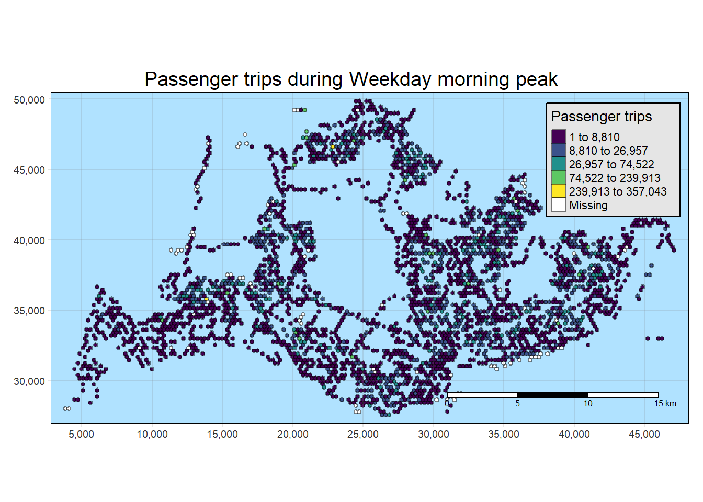
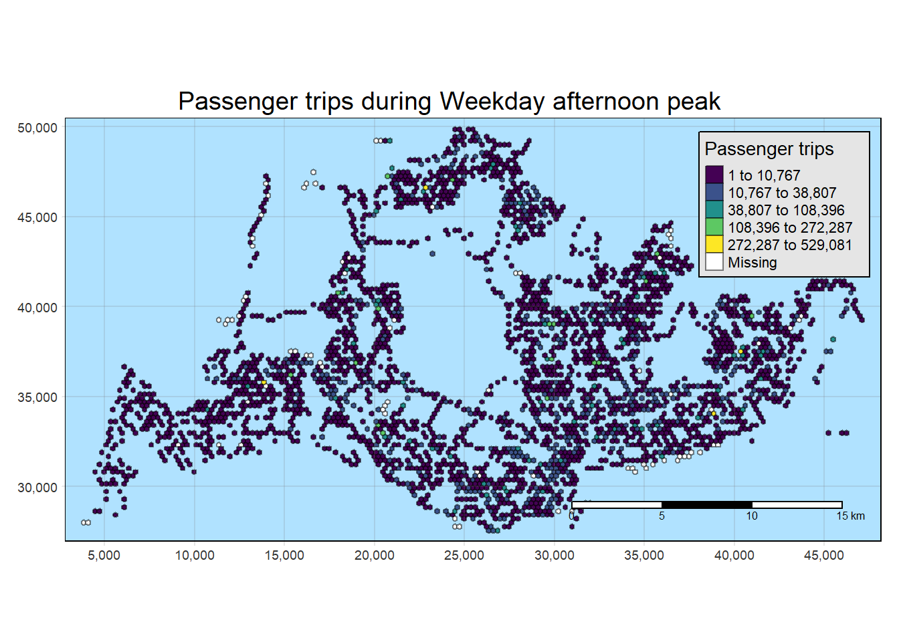
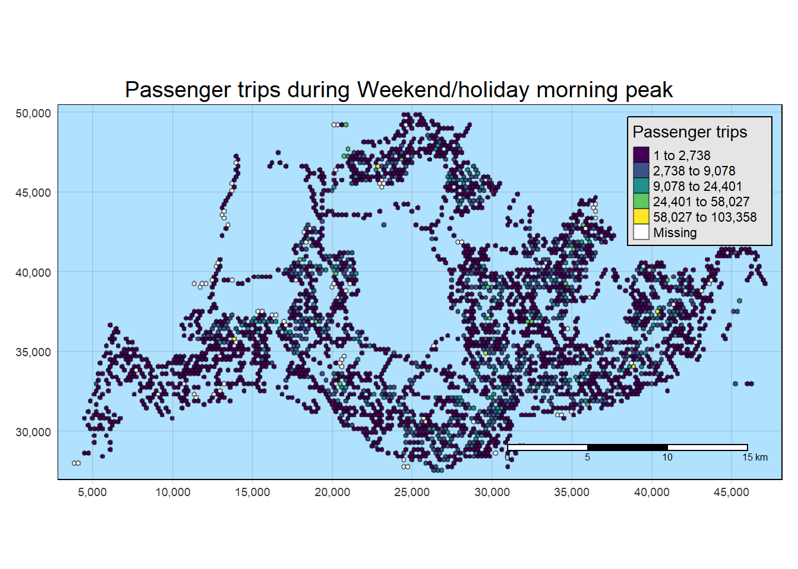
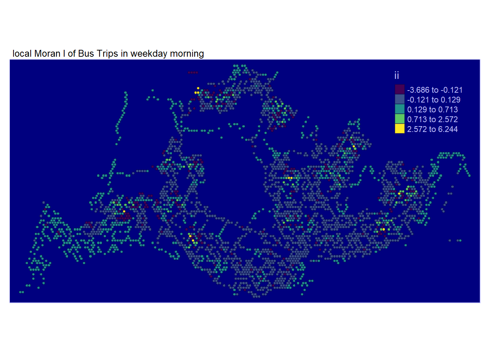
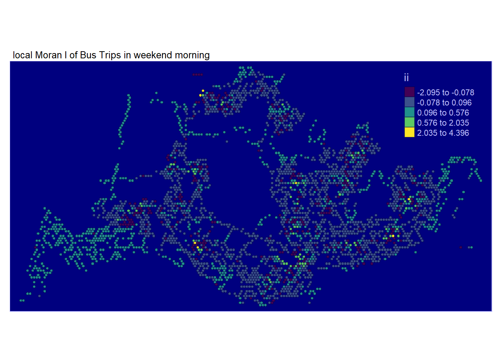
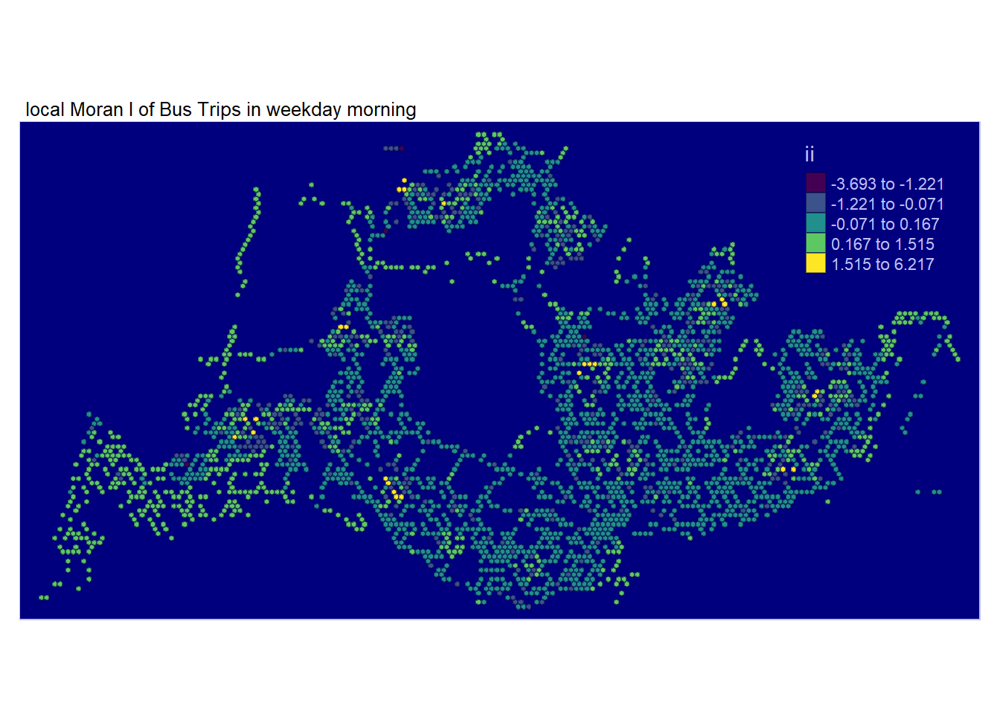
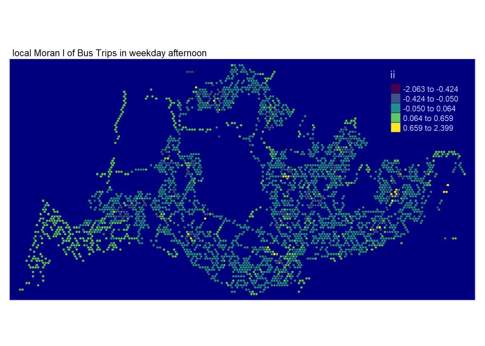

pacman::p_load(sf, sfdep, magrittr, tidyverse, tmap, knitr, RColorBrewer, viridis)Take Home Exercise 1 - Geospatial Analytics for Public Good
Overview
In the era of digital urbanization, city-wide infrastructures, encompassing transportation modes like buses, taxis, and mass transit, have undergone significant digitization. This transformation has yielded extensive datasets that serve as a fundamental framework for monitoring movement patterns across both space and time. This shift is particularly evident with the widespread adoption of pervasive computing technologies, including GPS and RFID, notably integrated into vehicles. For instance, the utilization of smart cards and GPS devices on public buses enables the collection of comprehensive data on routes and ridership. Within these vast datasets lie inherent structures and patterns that offer valuable insights into the characteristics of measured phenomena, providing a deeper understanding of human movement and behaviors within urban environments. The identification, analysis, and comparison of these patterns present opportunities for enhanced urban management, offering valuable information for both public and private urban transport service providers. Despite these possibilities, current practices often restrict the use of massive locational data to basic tracking and mapping through Geographic Information System (GIS) applications. This limitation arises from the insufficient capabilities of conventional GIS in effectively analyzing and modeling spatial and spatio-temporal data.
Objective
In this study, we first perform
Exploratory Spatial Data Analysis (ESDA) to provide us an understanding of the movement patterns on a high level before proceeding to with either
Local Indicators of Spatial Association (GLISA)
to undercover the spatial and spatio-temporal mobility patterns of public bus passengers in Singapore in detail.
Task
The specific tasks of this take-home exercise are as follows:
Geovisualisation and Analysis
With reference to the time intervals provided in the table below, compute the passenger trips generated by origin at the hexagon level,
Peak hour period Bus tap on time Weekday morning peak 6am to 9am Weekday afternoon peak 5pm to 8pm Weekend/holiday morning peak 11am to 2pm Weekend/holiday evening peak 4pm to 7pm Display the geographical distribution of the passenger trips by using appropriate geovisualisation methods,
Describe the spatial patterns revealed by the geovisualisation (not more than 200 words per visual).
Local Indicators of Spatial Association (LISA) Analysis
Compute LISA of the passengers trips generate by origin at hexagon level.
Display the LISA maps of the passengers trips generate by origin at hexagon level. The maps should only display the significant (i.e. p-value < 0.05)
With reference to the analysis results, draw statistical conclusions (not more than 200 words per visual).
Objective
The Data
Aspatial data
For the purpose of this take-home exercise, Passenger Volume by Origin Destination Bus Stops downloaded from LTA DataMall will be used.
Geospatial data
Two geospatial data will be used in this study, they are:
Bus Stop Location from LTA DataMall. It provides information about all the bus stops currently being serviced by buses, including the bus stop code (identifier) and location coordinates.
Master Plan 2019 Planning Sub-zone (No Sea) GIS data set of URA from data.gov.sg
Install R Package
1. Importing Data
We will import the data as a first step before proceeding with data cleaning, data wrangling and data exploration for the following:
- PassengerVolume, a csv file,
- BusStop, a point feature layer ESRI shapefile format
PassengerVolume is an aspatial data, we can import the data simply by using the read_csv function from tidyverse package and output it as a tibble dataframe called odbus
odbus <- read_csv("data/aspatial/origin_destination_bus_202310.csv")Bus Stop is a geospatial data in .shp file. We save it as a sf data frame called busstop using the st_read function of the sf package. The data is then geo-referenced to coordinates from the Singapore SVY21 coordinate system (EPSG: 3414)
busstop <- st_read(dsn = "data/geospatial",
layer = "BusStop") %>%
st_transform(crs=3414)Reading layer `BusStop' from data source
`C:\weipengten\ISSS624\Take-Home_Ex\Take-Home_Ex1\data\geospatial'
using driver `ESRI Shapefile'
Simple feature collection with 5161 features and 3 fields
Geometry type: POINT
Dimension: XY
Bounding box: xmin: 3970.122 ymin: 26482.1 xmax: 48284.56 ymax: 52983.82
Projected CRS: SVY212. Data Wrangling
Data Exploration
glimpse(odbus)As we intend to utilize Bus-stop codes as our unique identifiers when joining with our other datasets, it is not advisable to have it remain as a chr datatype. In fact, we should change it to a factor datatype.
odbus$ORIGIN_PT_CODE <- as.factor(odbus$ORIGIN_PT_CODE)
odbus$DESTINATION_PT_CODE <- as.factor(odbus$DESTINATION_PT_CODE) Checking for Duplicates
There is no duplicates
duplicate <- odbus %>%
group_by_all() %>%
filter(n()>1) %>%
ungroup()
duplicateChecking for Missing Data
There is no missing data
summary(odbus)Classifying Peak Hours
With reference to the time intervals provided in the requirements, we computed the passenger trips generated by origin. The passenger trips by origin are saved in 4 dataframes based on their respective classifications namely:
weekday_morning_peak
weekday_afternoon_peak
weekend_morning_peak
weekend_evening_peak
Show the code
weekday_morning_peak <- odbus %>%
filter(DAY_TYPE == "WEEKDAY") %>%
filter(TIME_PER_HOUR >= 6 &
TIME_PER_HOUR <= 9) %>%
group_by(ORIGIN_PT_CODE) %>%
summarise(TRIPS = sum(TOTAL_TRIPS))
weekday_afternoon_peak <- odbus %>%
filter(DAY_TYPE == "WEEKDAY") %>%
filter(TIME_PER_HOUR >= 17 &
TIME_PER_HOUR <= 20) %>%
group_by(ORIGIN_PT_CODE) %>%
summarise(TRIPS = sum(TOTAL_TRIPS))
weekend_morning_peak <- odbus %>%
filter(DAY_TYPE == "WEEKENDS/HOLIDAY") %>%
filter(TIME_PER_HOUR >= 11 &
TIME_PER_HOUR <= 14) %>%
group_by(ORIGIN_PT_CODE) %>%
summarise(TRIPS = sum(TOTAL_TRIPS))
weekend_evening_peak <- odbus %>%
filter(DAY_TYPE == "WEEKENDS/HOLIDAY") %>%
filter(TIME_PER_HOUR >= 16 &
TIME_PER_HOUR <= 19) %>%
group_by(ORIGIN_PT_CODE) %>%
summarise(TRIPS = sum(TOTAL_TRIPS))
write_rds(weekday_morning_peak, "data/rds/weekday_morning_peak.rds")
weekday_morning_peak <- read_rds("data/rds/weekday_morning_peak.rds")
write_rds(weekday_afternoon_peak, "data/rds/weekday_afternoon_peak.rds")
weekday_afternoon_peak <- read_rds("data/rds/weekday_afternoon_peak.rds")
write_rds(weekend_morning_peak, "data/rds/weekend_morning_peak.rds")
weekend_morning_peak <- read_rds("data/rds/weekend_morning_peak.rds")
write_rds(weekend_evening_peak, "data/rds/weekend_evening_peak.rds")
weekend_evening_peak <- read_rds("data/rds/weekend_evening_peak.rds")We save our processed data into .rds data format files using the write_rds() of readr package. The output file is saved in rds sub-folder. We do this to reduce the loading time and more importantly, we can avoid uploading the large raw files onto GitHub.
Data is Clean!
Not surprisingly, there are also no duplicates and missing data for Bus stop Data. The data is clean.
duplicate <- busstop %>%
group_by_all() %>%
filter(n()>1) %>%
ungroup()
duplicatesummary(busstop)Create Hexagon Dataset from busstop
Next we proceed to fulfill our requirement of preparing a hexagon dataset called hexagon and convert it into a sf dataframe called hexagon_sf :
Show the code
hexagon = st_make_grid(busstop, c(250, 250), what = "polygons", square = FALSE)
# To sf and add grid ID
hexagon_sf = st_sf(hexagon) %>%
# add grid ID
mutate(grid_id = 1:length(lengths(hexagon)))Examine The Grid
A brief overplot shows that there are 22134 grids in total and 19003 are without bus stops. We have a max of 5 bus stops per ORIGIN_GRID.
Show the code
hexagon_sf$n_colli = lengths(st_intersects(hexagon_sf, busstop))
count_all_grid_ids <- n_distinct(hexagon_sf$grid_id)
count_zero_bus_stops <- hexagon_sf %>%
filter(n_colli == 0) %>%
summarize(count = n_distinct(grid_id)) %>%
pull(count)
print(count_all_grid_ids)[1] 22134Show the code
print(count_zero_bus_stops)[1] 19003Show the code
summary(hexagon_sf$n_colli) Min. 1st Qu. Median Mean 3rd Qu. Max.
0.0000 0.0000 0.0000 0.2332 0.0000 5.0000 Important step to ensure this dataset will be useful for us
Filter for only hexagon data with non-zero counts of bus stops
hexagon_sf = filter(hexagon_sf, n_colli > 0)
write_rds(hexagon_sf, "data/rds/hexagon_sf.rds")
hexagon_sf <- read_rds("data/rds/hexagon_sf.rds")VIsualising the dataset
We can also do a visualisation to analyze the distribution of busstops. We specify break points at 0,1,2,3,4 and 5
Show the code
tmap_mode("plot")
map_busstopcounts = tm_shape(hexagon_sf) +
tm_fill(
col = "n_colli",
palette = c("grey",rev(viridis(5))),
breaks = c(0, 1, 2, 3, 4, 5),
title = "Number of Busstops",
id = "grid_id",
showNA = FALSE,
alpha = 0.6,
popup.vars = c(
"Number of collisions: " = "n_colli"
),
popup.format = list(
n_colli = list(format = "f", digits = 0)
)
) +
tm_borders(col = "grey40", lwd = 0.7)
map_busstopcountsA few notable findings were:
In the North-West, bus stops are scarce around the cemetery in Choa Chu Kang, the nearest bus stops in that area are those along Lim Chu Kang road. Tengah Airbase is also located in that area.
At the far East, bus stops are scarce around Changi Airport
Towards the middle, we have Paya Lebar Airbase
In the middle, we have the Central Water Catchment
A standalone bus stop in Sentosa Island
A few bus stops in Johor are surprisingly in our dataset too
Other than those mentioned above, the rest of the bus stops seem to be spread out evenly
We needed to perform aggregation of passenger trips by Hexagon instead of Origin Bus Stop, hence we need to first integrate bus stop data and the hexagon dataset.
Next, we sum up the total passenger trips group by each hexagon grid as ORIGIN_GRID for the 4 dataframes seperately to get the resulting tibble dataframes.
Show the code
# Combine Busstop and Hexagon
busstop_hexagon <- st_intersection(busstop, hexagon_sf) %>%
select(BUS_STOP_N, grid_id) %>%
st_drop_geometry
weekday_morning_peak_join_list <- left_join(weekday_morning_peak , busstop_hexagon,
by = c("ORIGIN_PT_CODE" = "BUS_STOP_N")) %>%
rename(ORIGIN_BS = ORIGIN_PT_CODE, ORIGIN_GRID = grid_id) %>%
group_by(ORIGIN_GRID) %>%
summarise(TOT_TRIPS = sum(TRIPS))
weekday_afternoon_peak_join_list <- left_join(weekday_afternoon_peak , busstop_hexagon,
by = c("ORIGIN_PT_CODE" = "BUS_STOP_N")) %>%
rename(ORIGIN_BS = ORIGIN_PT_CODE, ORIGIN_GRID = grid_id) %>%
group_by(ORIGIN_GRID) %>%
summarise(TOT_TRIPS = sum(TRIPS))
weekend_morning_peak_join_list <- left_join(weekend_morning_peak , busstop_hexagon,
by = c("ORIGIN_PT_CODE" = "BUS_STOP_N")) %>%
rename(ORIGIN_BS = ORIGIN_PT_CODE, ORIGIN_GRID = grid_id) %>%
group_by(ORIGIN_GRID) %>%
summarise(TOT_TRIPS = sum(TRIPS))
weekend_evening_peak_join_list <- left_join(weekend_evening_peak , busstop_hexagon,
by = c("ORIGIN_PT_CODE" = "BUS_STOP_N")) %>%
rename(ORIGIN_BS = ORIGIN_PT_CODE, ORIGIN_GRID = grid_id) %>%
group_by(ORIGIN_GRID) %>%
summarise(TOT_TRIPS = sum(TRIPS))After that is done, we have to join back with our sf dataset:
Show the code
weekday_morning_peak_join_geometry <- left_join(hexagon_sf,
weekday_morning_peak_join_list,
by = c("grid_id" = "ORIGIN_GRID"))
weekday_afternoon_peak_join_geometry <- left_join(hexagon_sf,
weekday_afternoon_peak_join_list,
by = c("grid_id" = "ORIGIN_GRID"))
weekend_morning_peak_join_geometry <- left_join(hexagon_sf,
weekend_morning_peak_join_list,
by = c("grid_id" = "ORIGIN_GRID"))
weekend_evening_peak_join_geometry <- left_join(hexagon_sf,
weekend_evening_peak_join_list,
by = c("grid_id" = "ORIGIN_GRID"))
write_rds(weekday_morning_peak_join_geometry, "data/rds/weekday_morning_peak_join_geometry.rds")
weekday_morning_peak_join_geometry <- read_rds("data/rds/weekday_morning_peak_join_geometry.rds")
write_rds(weekday_afternoon_peak_join_geometry, "data/rds/weekday_afternoon_peak_join_geometry.rds")
weekday_afternoon_peak_join_geometry <- read_rds("data/rds/weekday_afternoon_peak_join_geometry.rds")
write_rds(weekend_morning_peak_join_geometry, "data/rds/weekend_morning_peak_join_geometry.rds")
weekend_morning_peak <- read_rds("data/rds/weekend_morning_peak.rds")
write_rds(weekend_evening_peak_join_geometry, "data/rds/weekend_evening_peak_join_geometry.rds")
weekend_evening_peak_join_geometry <- read_rds("data/rds/weekend_evening_peak_join_geometry.rds")3. Exploratory Data Analysis (EDA)
We discovered that the data has a right-tailed distribution for all time classifications.
Show the code
combined_data <- rbind(
transform(weekday_morning_peak_join_geometry, period = "Weekday Morning Peak"),
transform(weekday_afternoon_peak_join_geometry, period = "Weekday Afternoon Peak"),
transform(weekend_morning_peak_join_geometry, period = "Weekend Morning Peak"),
transform(weekend_evening_peak_join_geometry, period = "Weekend Evening Peak")
)
# Plot combined data
ggplot(data = combined_data,
aes(x = as.numeric(`TOT_TRIPS`))) +
geom_histogram(bins = 20,
color = "black",
fill = "light blue") +
facet_wrap(~period, scales = "free_y") +
labs(title = "Distribution of Passenger Trips during Different Time Periods",
subtitle = "Histograms show the distribution of total trips for different time periods",
x = "Total Trips",
y = "Frequency")
Similarly, for trips per bus stop…
Show the code
combined_density <- combined_data %>%
mutate(`trips_per_busstop` = (`TOT_TRIPS` / n_colli))
# Plot combined data
ggplot(data = combined_density,
aes(x = as.numeric(`trips_per_busstop`))) +
geom_histogram(bins = 20,
color = "black",
fill = "light blue") +
facet_wrap(~period, scales = "free_y") +
labs(title = "Distribution of Passenger Trips during Different Time Periods",
subtitle = "Histograms show the distribution of total trips for different time periods",
x = "Total Trips Per BusStop",
y = "Frequency")
A quick examination of the distribution of origin trips across all four periods reveals that the weekday morning peak has the highest number of trip counts, followed by the weekday afternoon peak, the weekend morning peak, and finally, the weekend evening peak.
This observation suggests that, during the specified time periods, there is a discernible pattern in the frequency of trips, with a notable concentration of trips during weekday mornings. This information could imply potential trends in commuting behavior or specific usage patterns during different times of the week.
Transport agencies can allocate resources such as personnel and busses better with this information. Frequency of busses should also be increased for weekday afternoon peak period.
Show the code
ggplot(combined_data, aes(x = factor(period), y = TOT_TRIPS, fill = factor(period))) +
geom_bar(stat = "identity", position = "dodge") +
labs(title = "Counts of Total Trips Grouped by Periods",
x = "Period",
y = "TOT_TRIPS Count") +
theme_minimal() +
theme(axis.text.x = element_text(angle = 45, hjust = 1)) 
Trips per bus stop turns out to demonstrate similar patterns as compared to total trips.
This actually suggest that the transport authorities have done well in the planning of decision of bus stop locations over the years.
Perhaps this also mean that it is safe to analyse the choropleths using total trips by itself later on.
Show the code
ggplot(combined_density, aes(x = factor(period), y = trips_per_busstop, fill = factor(period))) +
geom_bar(stat = "identity", position = "dodge") +
labs(title = "Counts of Trips Per Bus Stop Grouped by Periods",
x = "Period",
y = "Trips Per Bus Stop") +
theme_minimal() +
theme(axis.text.x = element_text(angle = 45, hjust = 1)) 4. Geovisualisation and Analysis
Important Considerations
Due to the use of small hexagon tiles and a heavily right skewed distribution, quantile classification proves to provide little value. We decided that kmeans classification is best due to the ability to create discrete classes. This helps us to compare the 4 periods easily.
We previously derived number of Passenger Trips using the bus stops as the origin. This means that that some tiles could have missing data due to the lack of trips originating from there but that not necessary be the case for trips with that as the destination.
We previously excluded tiles with no bus stops earlier in hexagon_sf, hence any missing data present here is not due to missing bus stops
General Observations across all 4 interval classifications
It is observed that the stretch of bus stops along Lim Chu Kang has few to none origin trips which is understandable as that’s where the cemetery is and more convenient to take private transport
Show the code
tmap_mode("plot")
inferno_palette <- inferno(5)
tmap_options(check.and.fix = TRUE)
tm_shape(weekday_morning_peak_join_geometry)+
tm_fill("TOT_TRIPS",
style = "kmeans",
palette = viridis(5),
title = "Passenger trips") +
tm_layout(main.title = "Passenger trips during Weekday morning peak",
main.title.position = "center",
main.title.size = 1.2,
legend.height = 0.45,
legend.width = 0.35,
frame = TRUE) +
tm_borders(alpha = 0.5) +
tm_scale_bar() +
tm_grid(alpha =0.2)+
tmap_style("natural")Observations
- It is observed that the stretch of bus stops along Lim Chu Kang has few to none origin trips which
Show the code
tmap_mode("plot")
tmap_options(check.and.fix = TRUE)
tm_shape(weekday_afternoon_peak_join_geometry)+
tm_fill("TOT_TRIPS",
style = "kmeans",
palette = viridis(5),
title = "Passenger trips") +
tm_layout(main.title = "Passenger trips during Weekday afternoon peak",
main.title.position = "center",
main.title.size = 1.2,
legend.height = 0.45,
legend.width = 0.35,
frame = TRUE) +
tm_borders(alpha = 0.5) +
tm_scale_bar() +
tm_grid(alpha =0.2)+
tmap_style("natural")Show the code
tmap_mode("plot")
tmap_options(check.and.fix = TRUE)
tm_shape(weekend_morning_peak_join_geometry)+
tm_fill("TOT_TRIPS",
style = "kmeans",
palette = viridis(5),
title = "Passenger trips") +
tm_layout(main.title = "Passenger trips during Weekend/holiday morning peak",
main.title.position = "center",
main.title.size = 1.2,
legend.height = 0.45,
legend.width = 0.35,
frame = TRUE) +
tm_borders(alpha = 0.5) +
tm_scale_bar() +
tm_grid(alpha =0.2)+
tmap_style("natural")
Show the code
tmap_mode("plot")
tmap_options(check.and.fix = TRUE)
tm_shape(weekend_evening_peak_join_geometry)+
tm_fill("TOT_TRIPS",
style = "kmeans",
palette = viridis(5),
title = "Passenger trips") +
tm_layout(main.title = "Passenger trips during Weekend/holiday evening peak",
main.title.position = "center",
main.title.size = 1.2,
legend.height = 0.45,
legend.width = 0.35,
frame = TRUE) +
tm_borders(alpha = 0.5) +
tm_scale_bar() +
tm_grid(alpha =0.2) +
tmap_style("natural")
5. Local Indicators of Spatial Association (LISA) Analysis
- Decision-making process
Due to the use of hexagon grids, we had many empty grids and this proves difficult to derive contiguity weights. Hence, we attempted to derive distance weights instead
Fixed distance weight matrix is also inappropriate when there is an uneven distribution of neighbors, adaptive distance weights were considered instead.
5.1 Deriving adaptive distance weights
In this section, we will derive adaptive spatial weights by using the code chunk below.
We use k-nearest neighbors to decide the numbers of neighbors..
When considering the value for k… Average neighbor count is likely to be 1 because Min, Median, Mean, and 75th percentile are all 250 part. We set k=1 when generating the weights later.
Show the code
geo <- sf::st_geometry(hexagon_sf)
nb <- st_knn(geo, longlat = TRUE)
dists <- unlist(st_nb_dists(geo, nb))
summary(dists) Min. 1st Qu. Median Mean 3rd Qu. Max.
250.0 250.0 250.0 259.6 250.0 4250.0 The use of .allow_zero = TRUE option is to assign the value of 0 to rows with missing values for TOT_TRIPS as missing values will create problems for our analysis later
Show the code
wm_q_1 <- weekday_morning_peak_join_geometry %>%
mutate(TOT_TRIPS = replace_na(TOT_TRIPS, 0),
nb = st_knn(hexagon,
k=1),
wt = st_weights(nb,
style = "W",
allow_zero = TRUE),
.before = 1)
wm_q_2 <- weekday_afternoon_peak_join_geometry %>%
mutate(TOT_TRIPS = replace_na(TOT_TRIPS, 0),
nb = st_knn(hexagon,
k=1),
wt = st_weights(nb,
style = "W",
allow_zero = TRUE),
.before = 1)
wm_q_3 <- weekend_morning_peak_join_geometry %>%
mutate(TOT_TRIPS = replace_na(TOT_TRIPS, 0),
nb = st_knn(hexagon,
k=1),
wt = st_weights(nb,
style = "W",
allow_zero = TRUE),
.before = 1)
wm_q_4 <- weekend_evening_peak_join_geometry %>%
mutate(TOT_TRIPS = replace_na(TOT_TRIPS, 0),
nb = st_knn(hexagon,
k=1),
wt = st_weights(nb,
style = "W",
allow_zero = TRUE),
.before = 1) 5.2 Computing local Moran’s I
In this section, we will compute Local Moran’s I of Total Passenger Trips at county level by using local_moran() of sfdep package.
The provided code conducts a Local Moran’s I analysis on four distinct datasets (wm_q_1, wm_q_2, wm_q_3, wm_q_4), each associated with specific time periods or scenarios.
The analysis focuses on the spatial autocorrelation of the variable TOT_TRIPS within each dataset, employing the local_moran function with
neighbors (nb) and
weights (wt) and
99 simulations.
The calculated Local Moran’s I statistic assesses whether nearby observations exhibit similar total trip values, revealing spatial patterns and clusters.
The use of unnest implies a need to extract detailed information about the spatial relationships between observations and their neighbors after the Local Moran’s I analysis.
Show the code
lisa_1 <- wm_q_1 %>%
mutate(local_moran = local_moran(
TOT_TRIPS, nb, wt, nsim = 99),
.before = 1) %>%
unnest(local_moran)
lisa_2 <- wm_q_2 %>%
mutate(local_moran = local_moran(
TOT_TRIPS, nb, wt, nsim = 99),
.before = 1) %>%
unnest(local_moran)
lisa_3 <- wm_q_3 %>%
mutate(local_moran = local_moran(
TOT_TRIPS, nb, wt, nsim = 99),
.before = 1) %>%
unnest(local_moran)
lisa_4 <- wm_q_4 %>%
mutate(local_moran = local_moran(
TOT_TRIPS, nb, wt, nsim = 99),
.before = 1) %>%
unnest(local_moran)5.3 Visualising local Moran’s I
In the following code section, tmap functions are utilized to create a choropleth map based on the values in the ii field, representing the Local Moran’s I values. The chosen tmap_style option is set to albatross to suit the grid’s nature and emphasize clusters, where lighter colors indicate positive values and darker colors indicate negative values.
It’s important to note that a positive Local Moran’s I value signifies a feature’s membership in a cluster, while a negative value suggests that a feature is an outlier.
Examining the map, regions shaded in various hues of green indicate their membership in one or more clusters.While there are overlapping areas among the maps generated for the four periods of interest, there are also discrepancies.
However, relying solely on the local Moran’s score is insufficient for depicting spatial clustering, as it doesn’t provide information about whether the variable’s value (Total Passenger Trips) being examined is high or low, and whether the test result is statistically significant. We need to proceed with analyzing only the regions with statistically significant values of total passenger trips.
Show the code
tmap_mode("plot")
tm_shape(lisa_1) +
tm_fill("ii",
style = "kmeans",
palette = viridis(5)) +
tm_borders(alpha = 0.5) +
tm_layout(main.title = "local Moran I of Bus Trips in weekday morning",
main.title.size = 0.8) +
tmap_style("albatross")
Show the code
tmap_mode("plot")
tm_shape(lisa_2) +
tm_fill("ii",
style = "kmeans",
palette = viridis(5)) +
tm_borders(alpha = 0.5) +
tm_layout(main.title = "local Moran I of Bus Trips in weekday afternoon",
main.title.size = 0.8) +
tmap_style("albatross")
Show the code
tmap_mode("plot")
tm_shape(lisa_3) +
tm_fill("ii",
style = "kmeans",
palette = viridis(5)) +
tm_borders(alpha = 0.5) +
tm_layout(main.title = "local Moran I of Bus Trips in weekend morning",
main.title.size = 0.8) +
tmap_style("albatross")
Show the code
tmap_mode("plot")
tm_shape(lisa_4) +
tm_fill("ii",
style = "kmeans",
palette = viridis(5)) +
tm_borders(alpha = 0.5) +
tm_layout(main.title = "local Moran I of Bus Trips in weekend afternoon",
main.title.size = 0.8) +
tmap_style("albatross")5.4 Visualising p-value of local Moran’s I
In the code chunk below, tmap functions are used to prepare a choropleth map by using value in the p_ii_sim field
We will visualize solely the statistically significant local Moran’s I values (p_ii_sim < 0.05) through the subsequent code snippet.
Show the code
tmap_mode("plot")
tm_shape(lisa_1) +
tm_fill("p_ii_sim",
palette = c(rev(viridis(5)), "grey"),
breaks = c(0, 0.001, 0.01, 0.05, 1),
labels = c("0.001", "0.01", "0.05", "Not sig")) +
tm_borders(alpha = 0.5) +
tm_layout(main.title = "p-value of local Moran I in weekday morning",
main.title.size = 0.8) +
tmap_style("watercolor")
Show the code
tmap_mode("plot")
tm_shape(lisa_2) +
tm_fill("p_ii_sim",
palette = c(rev(viridis(5)), "grey"),
breaks = c(0, 0.001, 0.01, 0.05, 1),
labels = c("0.001", "0.01", "0.05", "Not sig")) +
tm_borders(alpha = 0.5) +
tm_layout(main.title = "p-value of local Moran I in weekday afternoon",
main.title.size = 0.8) +
tmap_style("watercolor")Show the code
tmap_mode("plot")
tm_shape(lisa_3) +
tm_fill("p_ii_sim",
palette = c(rev(viridis(5)), "grey"),
breaks = c(0, 0.001, 0.01, 0.05, 1),
labels = c("0.001", "0.01", "0.05", "Not sig")) +
tm_borders(alpha = 0.5) +
tm_layout(main.title = "p-value of local Moran I in weekend morning",
main.title.size = 0.8) +
tmap_style("watercolor")
Show the code
tmap_mode("plot")
tm_shape(lisa_4) +
tm_fill("p_ii_sim",
palette = c(rev(viridis(5)), "grey"),
breaks = c(0, 0.001, 0.01, 0.05, 1),
labels = c("0.001", "0.01", "0.05", "Not sig")) +
tm_borders(alpha = 0.5) +
tm_layout(main.title = "p-value of local Moran I in weekend afternoon",
main.title.size = 0.8) +
tmap_style("watercolor")
5.5 Visualising LISA map
In this visualisation, LISA categorises each region into one of four groups:
High-High indicates grids with high number of origin trips located next to other grids with high number of origin trips
Low-High indicates grids with low number of origin trips located next to other grids with high number of origin trips
High-Low indicates grids with high number of origin trips located next to other grids with low number of origin trips
Low-Low indicates grids with low number of origin trips located next to other grids with low number of origin trips
In this visualisation for Weekday Morning Peak, some observations were found:
High-High regions were found throughout parts of North-East, North, Central and West, except South.
High-High indicates grids with high number of origin trips located next to other grids with high number of origin trips
These spots also seem to be nearby each other in their respective regions, seemingly signifying a hub.
Low-High regions are few in existence, with about 1 in each subzone.
Low-High indicates grids with low number of origin trips located next to other grids with high number of origin trips
High-Low regions are few in existence, with about 1 in each subzone. High-Low regions could signify
High-Low indicates grids with high number of origin trips located next to other grids with low number of origin trips
Show the code
tmap_mode("plot")
lisa_sig <- lisa_1 %>%
filter(p_ii_sim < 0.05)
tmap_mode("plot")
tm_shape(lisa_1) +
tm_polygons() +
tm_borders(alpha = 0.5) +
tm_shape(lisa_sig) +
tm_fill("median",
palette = c(viridis(5))) +
tm_borders(alpha = 0.4)+
tmap_style("albatross")
Show the code
tmap_mode("plot")
lisa_sig <- lisa_2 %>%
filter(p_ii_sim < 0.05)
tmap_mode("plot")
tm_shape(lisa_2) +
tm_polygons() +
tm_borders(alpha = 0.5) +
tm_shape(lisa_sig) +
tm_fill("median",
palette = c(viridis(5))) +
tm_borders(alpha = 0.4) +
tmap_style("albatross")Show the code
tmap_mode("plot")
lisa_sig <- lisa_3 %>%
filter(p_ii_sim < 0.05)
tmap_mode("plot")
tm_shape(lisa_3) +
tm_polygons() +
tm_borders(alpha = 0.5) +
tm_shape(lisa_sig) +
tm_fill("median",
palette = c(viridis(5))) +
tm_borders(alpha = 0.4) +
tmap_style("albatross")Show the code
tmap_mode("plot")
lisa_sig <- lisa_4 %>%
filter(p_ii_sim < 0.05)
tmap_mode("plot")
tm_shape(lisa_4) +
tm_polygons() +
tm_borders(alpha = 0.5) +
tm_shape(lisa_sig) +
tm_fill("median",
palette = c(viridis(5))) +
tm_borders(alpha = 0.4) +
tmap_style("albatross")